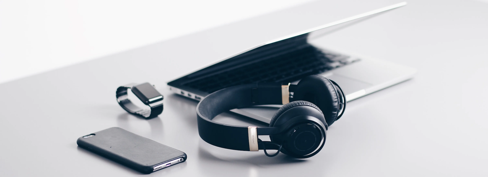
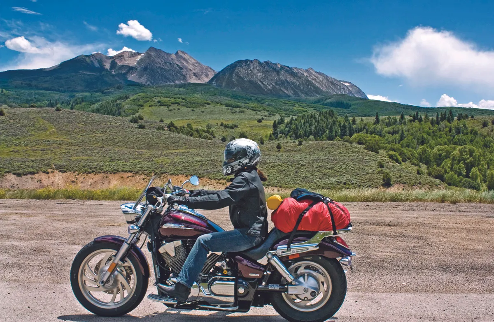

📅 20-Feb-2021
Article first published in Medium

My reason to embrace minimalism
Minimalism. Feels like the latest lifestyle trend, and the YouTube algorithm will make sure that I see it everywhere.
The clean aesthetics, the pristine white-walled houses with efficient but sophisticated Scandinavian furniture, the promise of a happier, more focused and purposeful life. And of course, the slow-motion videos of pour-over coffee brewing… There’s a lot to love about it, and I was certainly hooked from the moment I saw my first Matt D’Avella’s video. I binge-watched all of his videos, subscribed to his podcast and followed so many other content creators / Minimalism gurus.
It became my hobby.
At the beginning it was all about the a e s t h e t i c s. I loved the design, the fashion, the soft lo-fi soundtracks, the pretentious gourmet coffee…
I threw away some things here and there, and organised my room, but I was still living surrounded by stuff and my closets were full of old clothes, forgotten souvenirs and boxes, merely hiding the mess.
I knew the philosophy behind it, but I didn’t get it.
But then something started changing after I moved to London.
Moving always reminds you of how much s**t you own, but changing countries also forces you to start from almost 0. For the first couple of months, all my belongings fitted in a suitcase, a gym bag and a backpack.
Finally, the lockdowns gave me the last push. Left without a gym, I had to find a way to adapt my workouts to the lack of proper equipment, so I bought an abs wheel and some elastic cables. The small space they took made me think:
“Can you imagine being able to travel anywhere, anytime, and still be able to get a semi-decent workout?”
That led to “What if I also could work?”, that to “What if I could prolong that situation as long as I wanted?” and then to the definitive question:
“And what if I could fit everything I need in a couple of bags/backpacks so I could take it with me on the bike?”

With little but well thought possessions, I could travel more easily. I could move in a couple of hours if I feel like changing neighbourhoods or cities. I could go for a ride across the country without worries. Or I could just prolong my holidays or visits to my hometown.
That also makes you way more resilient to sudden changes in your income streams, opening the door to a greater financial independence: Your emergency savings can be smaller, giving you more room for investment, or you can make them last longer, being able to look for a new job without that much pressure if you get fired, or you could even get a cut in your working hours in order to have more free time.
To be totally honest, the nomad life is not entirely for me. I don’t like to be constantly on the move, and I kind of prefer working in an office rather than remotely. And even if I’ve decluttered a lot lately, I still have lots of books that I don’t want to get rid of, a guitar, some decorative stuff, etc. So I’m far from things like “owning less than 100 items”, or “all my possessions fit in a couple of bags that I carry around all the time”. But I like the feeling of, even having a “base” where to return, being able to move around easily (maybe I’m an aspiring semi-nomad?).
In the end, for me it’s not about how many items I have, or being a digital nomad traveling the world, it’s about having more options about how to live my life.